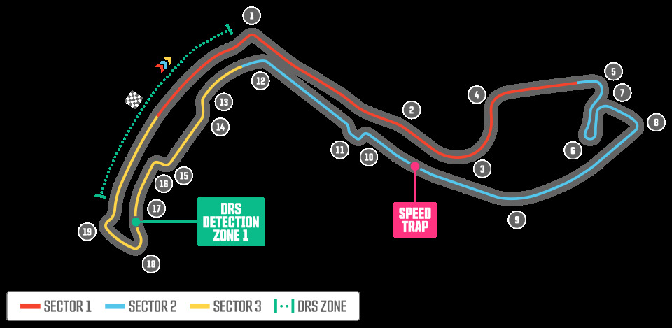

El circuito

El Circuito de Mónaco es un circuito urbano situado en las calles de Montecarlo y La Condamine. Es conocido por sus calles estrechas, sus curvas cerradas y la dificultad que tienen los pilotos para adelantar.
El trazado pasa por algunos de los lugares más conocidos de Mónaco, como el Casino de Montecarlo, el túnel y la zona del puerto.
Características
- Longitud: 3,337 km
- Número de vueltas: 78
- Distancia de carrera: aproximadamente 260 km
- Tipo de circuito: urbano
- Localización: Mónaco
Zonas destacadas
- Curva 1: Sainte Dévote
- Curva 4: Casino
- Curva 6: Horquilla de Fairmont
- Curva 9: Túnel de Mónaco
- Curvas 15 y 16: Zona de la piscina
Más información
Puedes consultar más información sobre el circuito en la página oficial de Fórmula 1 .